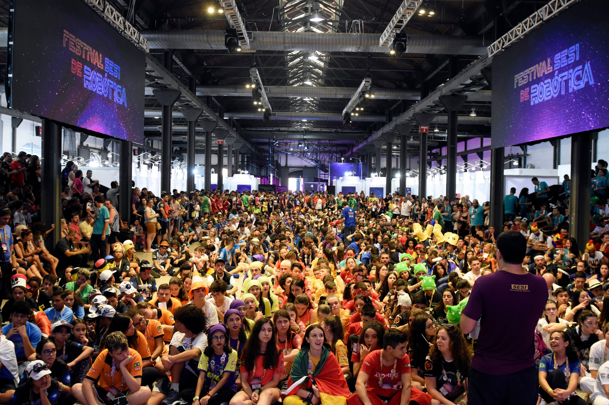
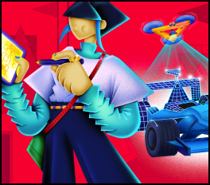
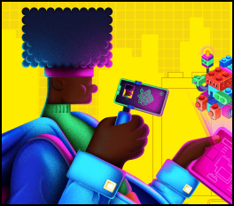
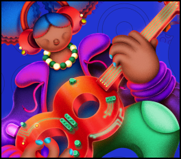
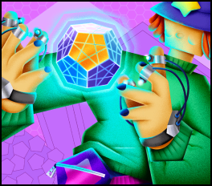

F1 In Schools
À frente de escuderias de Fórmula 1, estudantes do SESI precisam aliar marketing, design e trabalho em equipe para cruzar a linha de chegada!

FIRST LEGO League Challenge
O Torneio de Robótica FIRST LEGO League Challenge desafia estudantes de 9 a 15 anos a buscarem soluções para problemas do dia a dia da sociedade moderna.

FIRST Robotics Competition
Uma competição para estudantes de ensino médio que mistura a adrenalina dos esportes com os rigores da ciência e tecnologia!

FIRST Tech Challenge
Uma competição para estudantes a partir do 9º ano até o ensino médio, que mistura ciência, tecnologia, engenharia e matemática em desafios de tirar o fôlego!